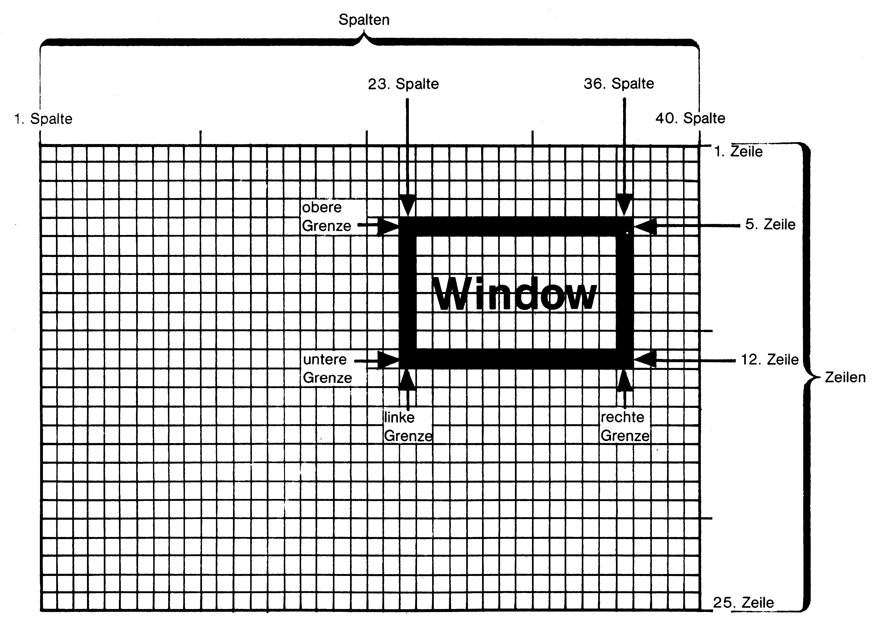
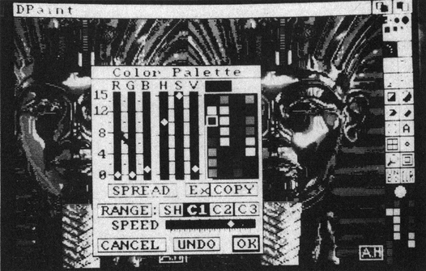
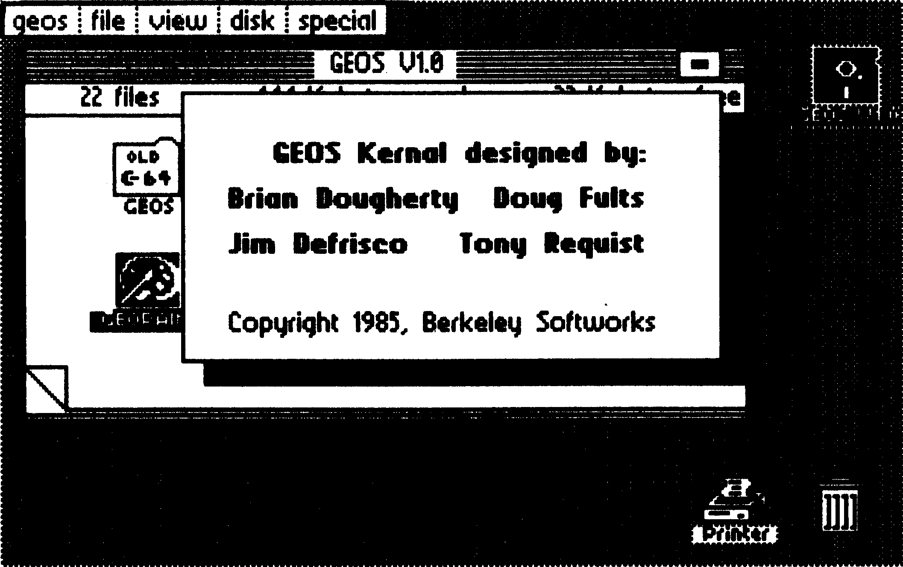
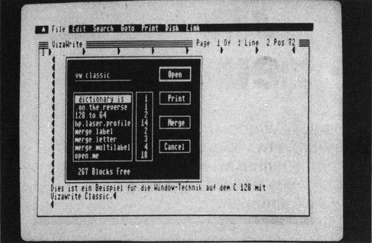

Windows – Fenster zum neuen Bedienungskomfort
Der Begriff »Window« hat vor allem durch neuere Computer, etwa dem AMIGA, einen größeren Bekanntheitsgrad erreicht. In diesem Kurs erfahren Sie vieles über die »Window-Technik« sowie deren Programmierung und Simulation auf Ihrem C 16, C 64 oder C 128.
Zunächst einmal wollen wir klären, was ein Window ist. Es handelt sich dabei um einen Bildschirmausschnitt, der als Teilbildschirm eingeblendet und separat, das heißt vom Hauptbildschirm unabhängig, behandelt wird. Die Ausgabe eines Windows geschieht durch Überschreiben eines Teils des Gesamtbildschirms mit dem Window-Text.
Dadurch, daß der alte Bildschirm nicht gelöscht, sondern nur teilweise überlagert wird, ist der vorherige Bildschirminhalt noch zu einem beträchtlichen Teil erkennbar. Werden viele solche Überlagerungen durchgeführt, entsteht allerdings ein relativ chaotisches Aussehen des Bildschirms, da von einzelnen Windows nur noch Bruchstücke zu sehen sind. Grundvoraussetzung ist, daß das jeweils »aktuelle« Window in vollem Umfang eingeblendet ist.
Nach dieser kurzen Theorie wollen wir uns die Praxis ansehen. In Bild 1 sehen Sie die schematische Darstellung eines Windows. Die Größe des gesamten Bildschirms setzt sich aus 40 Zeichen mal 25 Zeilen (siehe Bild 1) beim C 16, C 64 und C 128 im 40-Zeichen-Modus zusammen, also insgesamt 1000 Zeichen. In Bild 1 sehen Sie, was ein Window ist: Ein Teilbereich von der 23. bis zur 36. Spalte und von der 5. bis zur 12. Zeile wird als Window definiert und bekommt eine bestimmte Aufgabe zugewiesen. Zum Beispiel könnten wir programmieren, daß dort dauernd die Uhrzeit eingeblendet wird oder es könnte ein Auswahlmenü erscheinen. Es gibt viele Anwendungsmöglichkeiten!

Um Ihnen einen Eindruck zu geben, wie ein kommerzielles Windowprogramm aussehen kann, zeigen wir Ihnen einige Beispiele anhand des Amigas: Bild 2 wurde von der AMIGA-Benutzeroberfläche »Intuition«, Bild 3 von der C 64-Benutzeroberfläche GEOS (Testbericht siehe 64'er, Ausgabe 6/86) und Bild 4 vom C 128-Textverarbeitungsprogramm Vizawrite Classic (Test: 64'er, 5/86) aufgenommen.



Das erste Window-Programm
Nehmen wir wieder Bild 1 zur Hand. Wenn wir fürs erste keine größeren Ansprüche stellen, als daß der in Bild 1 als Window definierte Bereich unabhängig vom Gesamtbildschirm beschrieben wird, genügt uns Listing 1. Dieses Programm läuft auf C 16, C 64 und auf dem C 128 im 40-Zeichen-Modus. Wenn Sie es ganz normal über »RUN« starten, wird zunächst der Bildschirm mit zufälligen Zeichen beschrieben. Dies erleichtert die Demonstration, daß nur der Bildschirmbereich des Windows genutzt wird und dieser eigenständig ist. Dann wird das Window ausgegeben. Mit einem Tastendruck wird das Programm beendet.
In diesem Anwendungsbeispiel wird das Window rein demonstrativ genutzt, es zeigt lediglich seine »persönlichen« Daten an. Rein von der Betrachtung des laufenden Programms kann man auch sehen, daß das Window optisch durch eine Umrahmung hervorgehoben wird. Diese Eingrenzung ist bei Commodore-Computern dank der Grafikzeichen einfach realisierbar, denn Kasten- und Rahmen-Symbole sind in ausreichender Menge vorhanden. Die grafische Hervorhebung ist von elementarer Bedeutung, damit man klar ersehen kann, wo ein Window beginnt und wo es endet, denn Windows sind keine Spielerei, sondern sollen statt dessen eine ökonomische Nutzung des Bildschirms ermöglichen.
Bei einem Start des Programms über GOTO 360 wird das Überschreiben des Bildschirms durch Zufallszahlen übersprungen. Sie könnten zum Beispiel das Programm über LIST auf dem Bildschirm ausgeben und dann ohne vorheriges Löschen des Bildschirms mit GOTO 360 starten. In jedem Fall wird das Window eingeblendet, egal was vorher auf dem Bildschirm stand. Genau diese Eigenschaft macht die Flexibilität der Windows aus.
Die Programmiertechnik
Bis jetzt haben wir uns sehr wenig mit der Technik beschäftigt und das Ganze eher aus Anwendersicht betrachtet. Sie werden aber sehen, daß man keine besonderen Programmierkenntnisse braucht, um Windows zu realisieren. Im Prinzip ist es nur eine Frage der Planung des Programms und im besonderen der Bildschirmausgabe. Bei neueren Computern wird eine ausgereifte Window-Technik bereits vom Betriebssystem unterstützt; deswegen brauchen wir aber noch lange nicht zu verzweifeln, denn vieles, was die Großen können, schaffen die Kleinen auch. In diesem Zusammenhang möchte ich gleich erwähnen, daß die sogenannte »Window-Technik« von C 16 und C 128 für unsere Zwecke unbrauchbar ist, denn es handelt sich nur um eine Verkleinerung des Bildschirms.
Kommen wir zurück zur Programmierung. Weil die Ausgabe-Routinen des Computers nicht in der Lage sind, für uns darauf zu achten, daß wir nicht über die Grenzen eines Windows hinausschreiben, müssen wir solche Vorkehrungen treffen. Als erstes müssen wir zur Ausgabe eines Windows auf die richtige Positionierung des Cursors achten. In unserem Beispiel (wir befinden uns immer noch bei Listing 1) muß der Cursor in die 5. Zeile bewegt werden, da der obere Rand des Windows mit 5 festgelegt ist. Dieses Ansteuern der 5. Zeile erreichen wir in den Zeilen 390 bis 420. Der Code CHR$(17) in Zeile 420 steht für <CURSOR-DOWN>. Dadurch, daß in Zeile 420 insgesamt 4mal der Cursor von der obersten Zeile aus nach unten bewegt wird, landen wir logischerweise in der 5. Zeile. Falls es Ihnen nicht klar sein sollte, probieren Sie es doch im Basic-Editor mit der CURSOR-DOWN- und HOME-Taste aus.
Damit hätten wir schon die obere Grenze eingehalten. Von gleicher Wichtigkeit ist die linke Grenze. Wir können nicht ganz links am Bildschirmrand mit der Ausgabe einer Zeile beginnen, sondern erst in der 23. Spalte. Dies heißt für uns, daß wir die ersten 22 Spalten einer Bildschirmzeile überspringen müssen, wofür die CURSOR-RIGHT-Bewegung verantwortlich ist (siehe zum Beispiel Zeile 460).
Wenn wir dann eine richtige Position am Bildschirm angesteuert haben, kann eine Zeile des Windows ausgegeben werden. Es ist unbedingt darauf zu achten, daß der Text nicht länger, als das Window breit ist. Die Breite des Windows ergibt sich aus linkem und rechtem Rand. In unserem Fall ist der linke Rand die 23. der rechte Rand die 36. Spalte. Die Breite beträgt 36-23+1 = 14 Zeichen. Die 1 muß deshalb addiert werden, da auch die Endspalten 23 und 36 genutzt werden. An den Zeilen 460 bis 530 können Sie sehen, daß nach den CURSOR-RIGHT-Steuerzeichen nur 14 Zeichen ausgegeben werden – nicht mehr und nicht weniger.
Nach der Ausgabe der Window-Zeile muß die nächste Zeile angesteuert werden. Hierzu füllen wir den Rest der Zeile mit <CURSOR-RIGHT>-Befehlen. In unserem Beispiel sind dies 4, denn von der Bildschirmbreite (40 Zeichen) muß einfach die rechte Grenze (36. Spalte) subtrahiert werden: 40-36 = 4.
Am Ende der Zeile steht hinter den Anführungszeichen ein Semikolon, der einen Zeilenvorschub verhindert. Wenn wir keine Steuerzeichen außer CURSOR RIGHT verwenden, hat jetzt ein Ausgabestring (siehe Zeile 460) genau 40 Zeichen Länge. Dies geht bis zur letzten Window-Zeile (Zeile 530); da nach der letzten Window-Zeile nicht mehr ins Window gedruckt werden soll, sind die vier CURSOR RIGHTs am Ende überflüssig und werden auch nicht ausgegeben. Der Strichpunkt ist aber weiterhin erforderlich, denn ein Zeilenvorschub kann den Bildschirmaufbau sehr durcheinander bringen (besonders beim C 16/C 128!), wenn der Computer beispielsweise ein Scrolling unternimmt. Dies können Sie gut beobachten, wenn Sie das Programm per Tastendruck beenden.
Besser mit dem CHAR-Befehl
Sie sollten nun ein wenig an Listing 1 herumexperimentieren. Falls Sie keinen C 64, sondern einen C 16/C 128 haben, ist Listing 1 für Sie von nun an uninteressant, denn beim C 16/C 128 gibt es eine viel einfachere Lösung unter Einsatz des CHAR-Befehls. Dieser ermöglicht ein Ausgeben an fest vorgegebene Cursorpositionen, so daß wir die beim C 64 erforderlichen Cursorpositionierungen über Steuerzeichen vergessen können.
Listing 2 hat denselben Effekt wie Listing 1, ist allerdings wesentlich kürzer, da die Steuerzeichen wegfallen. Geändert hat sich, daß hier das CHAR-Kommando, welches das Basic 2,0 des C 64 nicht kennt, eingesetzt wird und somit die Cursorpositionierungen aus Listing 1 entfallen. Wie nun dieser CHAR-Befehl verwendet wird, bedarf einiger Erläuterung, die man sowohl im C 16- als auch im C 128-Handbuch schmerzlich vermißt. Dort wird nur erklärt, wie man mit dem CHAR-Befehl Texte in hochauflösender Grafik schreibt. CHAR kann jedoch noch mehr, es ist auch eine Ausgabe im Text-Modus möglich. Dann lautet die Syntax wie folgt:
CHAR,Spalte,Zeile,"Ausgabetext als String"(,1)Beispiele hierzu können Sie den Zeilen 460 bis 530 in Listing 2 entnehmen. Daß auf den CHAR-Befehl unmittelbar ein Komma folgt, ist kein Druckfehler; damit soll dem Computer angezeigt werden, daß eine Ausgabe in den Textbildschirm gewünscht ist. Statt »CHAR,...« könnte man auch »CHAR1,...« schreiben, erübrigt sich aber, da es im Betriebssystem bereits voreingestellt ist. Der CHAR-Befehl rechnet die Spalten und Zeilen nicht von 1 bis 40 beziehungsweise 1 bis 25, wie wir es bislang getan haben, sondern von 0 bis 39 beziehungsweise 0 bis 24. Da wir Menschen aber beim Zählen mit 1 beginnen, müssen wir uns geringfügig umstellen. Der Ausgabestring enthält nur den Text, der in das Window gehört. Die fehlenden Steuerzeichen-Orgien tragen sehr zur Übersichtlichkeit und Kürze der Listings bei. Um einem Trugschluß vorzubeugen: Der Ausgabestring des CHAR-Befehls wird nicht wie bei PRINT angegeben, das heißt nach dem Ausgabestring darf kein Semikolon stehen, das Komma ist auch nicht erlaubt. Operationen wie »+«, »MID$«, »RIGHT$«, »LEFT$« oder »STR$« sind weiterhin zugelassen.
Beim CHAR-Befehl ist das Schreiben der Window-Zeilen leichter, wenn man darauf achtet, daß der Ausgabestring jeweils in der gleichen Spalte am Bildschirm beim Editieren beginnt. Dann bekommt man nämlich eine genauere Vorstellung davon, wie der Text später am Bildschirm aussieht. Da die Parameter »Spalte« und »Zeile« ein oder zwei Zeichen Länge haben, könnte es leicht sein, daß beim Listen die Ausgabestrings nicht genau, sondern leicht verschoben untereinander stehen. Dies kann man verhindern, indem man bei einstelligen Parametern vor den Parameter ein Leerzeichen setzt: in Zeile 460 wird vor die einstellige Zahl »4« (Zeilenangabe) ein Leerzeichen gesetzt, damit die Zeile genausolang ist wie zum Beispiel Zeile 520, in der der Parameter Zeile schon zweistellig ist. Dieses Einfügen von Leerzeichen ist für die Funktion der Zeile nicht erforderlich, denn Leerzeichen außerhalb von Anführungszeichen überliest der Computer bekanntlich; es ist aber dennoch kein übersteigertes Schönheitsbewußtsein, sondern – wie gesagt – eine Hilfe beim Schreiben des Ausgabestrings.
Die Window-Ausgabe-Zeilen mit dem CHAR-Befehl müssen immer dieselbe Zahl als Spaltenangabe haben; die Zeilenangabe wird von Zeile zu Zeile um 1 erhöht (siehe Zeilen 460 bis 530), denn sonst würden wir immer nur dieselbe Window-Zeile drucken.
Der CHAR-Befehl bietet noch einen Vorteil gegenüber dem PRINT-Kommando, der für die C 128-Besitzer ziemlich wichtig ist: Ein mit CHAR-Befehlen arbeitendes Programm läuft auch im 80-Zeichen-Modus, wie Sie im Vergleich zwischen Listing 1 und Listing 2 erkennen können: Listing 1 (arbeitet mit PRINT) ist nur im 40-Zeichen-Modus funktionsfähig und müßte für den 80-Zeichen-Modus angepaßt werden, Listing 2 (verwendet die CHAR-Anweisung) läuft in beiden Modi auch ohne Umschreibung.
Windows im 80-Zeichen-Bildschirm des C 128
Da ein Window wie jeder andere Text auch Platz auf dem Bildschirm beansprucht, kann man auf einem größeren Bildschirm mehr und größere Windows unterbringen als auf einem kleinen. Deshalb eignet sich der 80-Zeichen-Bildschirm des C 128 besonders, denn er faßt doppelt soviele als der 40er-Bildschirm. Wir wollen uns diese größere Kapazität zunutze machen und lassen ein wesentlich größeres Window ausgeben. Listing 3 setzt wieder den CHAR-Befehl ein. In Zeile 320 wird der 80-Zeichen-Modus eingeschaltet und der Prozessor auf doppelte Geschwindigkeit umgestellt. Beim zufälligen »Vollschreiben« des Bildschirms in Zeile 340 werden nun 1999 (statt vorher 999) Zeichen ausgegeben, denn der 80-Zeichen-Bildschirm faßt ja 1000 Zeichen mehr als der 40er.
Mehrere Windows
Bislang haben wir jeweils ein einziges Window ausgegeben. Listing 4 ist nun ein Anwendungsbeispiel, das sich mehrerer Windows bedient. Es handelt sich um ein Menü, wie es vor einem fiktiven Spielprogramm stehen könnte. Da Listing 4 auch auf dem C 64 laufen soll, wird auf den CHAR-Befehl verzichtet. Um die Cursorpositionierung trotzdem einfacher zu machen, wird das CURSOR-DOWN-Steuerzeichen jeweils in entsprechender Häufigkeit nach dem HOME-Steuerzeichen ausgegeben (siehe Zeilen 340, 440, 510 und 580).
Durch Drücken der Tasten 1 bis 3 wird der Wert für Geschwindigkeit, Anzahl der Spieler oder Spielstufe erhöht; wird der höchste erlaubte Wert überschritten, so wird wieder 1 eingestellt; 4 beendet das Programm.
An Listing 4 kann man einige verschiedene Möglichkeiten der optischen Eingrenzung eines Windows erkennen.
Durch Kommentare in »REM«-Zeilen erklärt sich der Programmaufbau von selbst.
Text unter Window retten
Einen großen Nachteil haben alle bisher von uns ausgegebenen Windows gehabt: Der Text, der vorher an der Position des Windows stand, ist verlorengegangen, da er durch das Window überschrieben wurde. Dies macht in 50 Prozent aller Fälle nichts aus, aber was ist mit den anderen 50 Prozent?
Wir wollen den unter dem Window liegenden Bildschirmbereich retten, indem wir ihn über PEEK auslesen und in einem Variablenarray speichern. Wenn das Window verschwunden und der alte Text eingeblendet werden soll, wird das Variablenarray wieder in den Bildschirmspeicher geschrieben. Diese Anforderung erfüllen Listing 5 und 6, die wir zunächst nur ausprobieren, dann aber eingehend besprechen wollen.
Listing 5 ist die C 64/C 128-Version (C 128 im 40-Zeichen-Modus!), Listing 6 eine C 16-Fassung. Die C 16-Version unterscheidet sich von Listing 5 nur durch den Einsatz des CHAR-Befehls und eine andere Basisadresse des Bildschirmspeichers. Wenn wir das Programm starten (C 64/C 128: Listing 5/C 16: Listing 6), wartet das Programm auf einen Tastendruck. »N« bewirkt, daß der Bildschirm nicht zur Demonstration mit zufälligen Zeichen überschrieben wird; eine beliebige andere Taste ruft das »Vollschreiben« hervor.
Dann wird das Window, das Sie aus den Listings 1 und 2 kennen, ausgegeben. Wenn Sie eine Taste drücken, wird der vorher an der Windowposition stehende Text angezeigt, ein weiterer Tastendruck blendet wieder das Window ein und so weiter.
Befassen wir uns nun mit der Programmierung. In Zeile 270 wird jeweils ein 111+1 = 112 Elemente großes Array T(n) dimensioniert. Die »+1« ergibt sich daraus, das die Zählung wieder mit Null beginnt. Zwischen Null und 111 liegen 112 Elemente (T(0). . .T(111)). In diesem Array werden später die »unter dem Window liegenden« Zeichen gespeichert. Die Größe ergibt sich aus der Anzahl der Spalten des Windows multipliziert mit der Anzahl der Zeilen des Windows: 14 * 8 = 112.
Der an der Windowposition liegende Text muß noch vor der Ausgabe des Windows gerettet werden, da er ja durch das Window überschrieben wird. Dies erreichen wir in den Zeilen 420 bis 460. Wie Sie sehen, muß auch dort die computerinterne Numerierung, die jeweils um 1 kleiner ist als die, die wir gewohnt sind, verwendet werden; deshalb heißt es zum Beispiel in Zeile 430 »4 TO 11«, gemeint sind aber – wie der REM-Kommentar dahinter sagt – die Zeilen 5 bis 12 nach der mit 1 beginnenden Zählweise.
In Listing 5 lesen die Zeilen 650 bis 690 den Text wieder aus dem Array T(n) ein und schreiben ihn in den Bildschirmspeicher, in Listing 6 wird dies durch die Zeilen 640 bis 680 erreicht.
Nachdem wir jetzt alle Grundlagen der Window-Programmierung in Basic erarbeitet haben, soll auch die Programmierung in Maschinensprache behandelt werden. Damit werden wir uns bis zum Ende dieses Kurses befassen. Sollte Ihnen etwas nicht klar sein, so können Sie durch das Experimentieren an den Listings ein wenig Erfahrung sammeln.
Windows in Maschinensprache
Unser Ziel ist nun, Maschinenroutinen für Windows zu schreiben, die wir in ein Demoprogramm einbinden wollen. Wir werden zwei Routinen entwickeln; die eine nennen wir OUTW, die andere PRWIN.
OUTW soll ähnlich wie die Betriebssystemroutine BASOUT ($FFD2) funktionieren, nur daß das auszugebende Zeichen in das Window und nicht in den Normalbildschirm geschrieben wird; PRWIN soll ein ganzes Window in einem Zug ausdrucken.
Für jedes Window schreiben wir der Einfachheit halber eine eigene OUTW- und eine eigene PRWIN-Routine (OUTW1/PRWIN1 für Window 1, OUTW2/PRWIN2 für Window 2). Diese Routinen halten wir so, daß sie leicht an andere Windows angepaßt werden können.
Die fertige Lösung bekommen Sie in Form von Listing 7 (befindet sich auf der Leserservice-Diskette) vorgestellt. Dies ist ein C 64-Quelltext vom Assembler Hypra-Ass. Eine C 128-Entsprechung ist Listing 8; dieser Quelltext wurde mit dem Top-Ass erstellt, einem leistungsfähigen Assembler für den C 128. Zur C 16-Version kommen wir später.
Listing 7 und Listing 8 (befinden sich nur auf der Leserservice-Diskette) sind sogar in den Zeilennummern identisch, allerdings mußten einige Label und Assembler-Anweisungen auf den C 128 umgeschrieben werden. Die Ähnlichkeit beider Listings kommt auch dadurch zustande, daß der Top-Ass eine C 128-Weiterentwicklung des Hypra-Ass ist.
Zunächst wollen wir unser Demoprogramm einmal starten. Falls Sie einen C 128 und Top-Ass haben, assemblieren Sie sich Listing 8. C 64 Besitzer assemblieren sich Listing 7 mit Hypra-Ass. Der C 128-Quelltext erzeugt beim Assemblieren auf Diskette den Objektcode unter dem Filenamen »O«. Mit BANK15:BOOT»O« können Sie diesen dann starten. Hypra-Ass assembliert Listing 7 direkt in den Speicher; mit SYS 49152 wird der Objektcode gestartet.
Auf der Programm-Diskette ist der fertige Objektcode gespeichert; dies erleichtert Ihnen das Abtippen oder das Umschreiben auf andere Assembler.
Nach dem Start erscheint in dem Window Nummer 1 das Menü. Mit <1> (Erklärung) wird eine Erklärung ein/ausgeblendet, mit <2> die Bildschirmfarbe geändert (beim C 128 nur die Farbe des 40-Zeichen-Bildschirms!) und mit <3> das Programm beendet.
Die Erklärung erscheint (wie sollte es auch anders sein) in einem Window (Window #2).
Nun zum C 16-Programm. Die C 16-Version habe ich ebenfalls mit Hypra-Ass auf einem C 64 erstellt (wie die C 64-Version). Dazu müssen nur einige Zeilen geändert werden (Listing 9, befindet sich nur auf der Programm-Service-Diskette). Da wohl kaum einer sowohl C 16 als auch C 64 besitzt, ist Listing 10 (befindet sich nur auf der Programm-Service-Diskette) ein Hex-Dump des Objektcodes, den Sie mit dem im C 16 eingebauten Monitor eingeben können. Das C 16-Programm wird mit SYS 14848 gestartet.
Vorher sollten Sie es aber im Monitor mit
S "FILENAME",Gerät,3A00,3D68speichern.
Befassen wir uns nun mit den Quelltexten; C 64-Besitzer nehmen bitte Listing 7, die C 128er Listing 8, C 16-Fans Listing 7 und die Änderungen aus Listing 9 – Zeilenangaben haben immer für alle Listings Gültigkeit.
Zunächst werden die Symbole definiert. ZEILE und SPALTE sind Zeropage-Adressen, in denen die aktuelle Cursorzeile und -spalte stehen; da es sich um Betriebssystem-Variablen handelt, sind diese von C 64 und C 128 verschieden. Wir brauchen die Label ZEILE und SPALTE, um später die Cursorposition feststellen zu können.
ZEILE1/SPALTE1 beziehungsweise ZEILE2/SPALTE2 sind die Cursorpositionen innerhalb der Windows. Diese werden vom Programm laufend neu berechnet. SETCUR ist ein Betriebssystem-Einsprung zur Cursorpositionierung; im X-Register wird die Zeile, im Y-Register die Spalte übergeben. Dann wird der Cursor mit JSR SETCUR nach Wunsch positioniert.
BASOUT und GET sind Kernel-Routinen zur Aus- beziehungsweise Eingabe eines Zeichens. TEMP1 ist ein 2-Byte-Zwischenspeicher, in dem die PRWIN1/PRWIN2-Routine die Endadresse des auszugebenden Textes ablegt. ERKLFLAG ist ein Flag dafür, ob der Erklärungstext am Bildschirm steht (Inhalt von ERKLFLAG = 0) oder ob er nicht angezeigt ist (Inhalt von ERKLFLAG = 1). CLEAR, HOME und CR sind ASCII-Codes für einige Steuerzeichen.
LINKS1 / RECHTS1 / OBEN1 / UNTEN1 beziehungsweise LINKS2 / RECHTS2 / OBEN2 / UNTEN2 sind die Grenzen der Windows. LINKS1/LINKS2 und OBEN1/OBEN2 werden in der mit 0 beginnenden Numerierung angegeben. Zu RECHTS1/RECHTS2 und UNTEN1/UNTEN2 addieren wir noch 1 (siehe »+1« in 500, 520, 550, 570).
Aus diesen Parametern können wir dann in 590/600 die Anzahl der Zeichen in einem Window berechnen und in LAENGE1 beziehungsweise LAENGE2 merken. Diese Länge ist für die PRWIN-Routinen wichtig, damit sofort feststeht, wieviele Zeichen ausgegeben werden müssen. OUTPUTBYTE (Zeile 620) ist ein Zwischenspeicher, in dem das über eine OUTW-Routine auszugebende Zeichen gespeichert wird.
TEXTPTR ist ein Zeropage-Zeiger für unsere Zwecke, den wir von der PRWIN-Routine auf das auszugebende Zeichen stellen lassen.
Mit diesen Erläuterungen und den Kommentaren im Quelltext dürfte es für Sie kein Problem sein, das Programm zu verstehen. Lediglich zu Zeile 4230 ist noch zu sagen, daß hier das ERKLFLAG von 0 auf 1 beziehungsweise von 1 auf 0 umgeschaltet wird.
Komfortable Windows
Damit Sie die Routinen auch für eigene Programme nutzen können, wollen wir die Parameterübergabe an OUTW/PRWIN besprechen, wie in einem Assembler-Kurs die Benutzung einer Betriebssystem-Routine besprochen wird.
Mit LDA #ASCII-Code des Zeichens
JSR OUTW ;
OUTW1 oder OUTW2
kann ein Zeichen ins Window ausgegeben werden. Nach dem Beenden der Routine bekommen Akku, X- und Y-Register denselben Wert wieder, den sie vor dem Aufruf hatten. Bei den ASCII-Codes sind nur druckende Zeichen, das heißt alle Zeichen außer den Steuerzeichen, vorgesehen. Die meisten Steuerzeichen führen zu Fehlfunktionen. Dennoch sind die Steuerzeichen CLEAR, HOME und CR (CR = CARRIAGE RETURN = CHR$(13) in Basic) zugelassen und wurden für die Window-Technik modifiziert. Mit HOME wird die linke obere Ecke des Windows angesprungen, mit CLEAR wird das Window gelöscht und automatisch HOME ausgeführt, und mit CR wird an den Anfang der nächsten Zeile gesprungen. Um Steuerzeichen wie REVERS ON/OFF oder Farbsteuerzeichen auszugeben, muß man diese über die normale BASOUT-Routine des Betriebssystems senden; die dadurch hervorgerufenen Effekte werden von der OUTW-Routine beibehalten, ein durch REVERS ON über BASOUT bewirkter Reversdruck gilt also auch für die von OUTW ausgegebenen Zeichen.
Von gleicher Einfachheit ist die Anwendung der PRWIN-Routine. In Akku (Low-Byte) und Y-Register (High-Byte) wird die Adresse übergeben, ab der der Text des Windows im Speicher steht. Am Ende des Textes und im Text sind keinerlei Endmarkierungen erforderlich, denn aus den Window-Grenzen geht eindeutig hervor, wieviele Zeichen ausgegeben werden müssen. Hier werden die Label LAENGE1 und LAENGE2 herangezogen.
Zwei Anwendungen von PRWIN-Routinen sehen Sie in den Zeilen 3150 bis 3300 und 3670 bis 3870.
Das mit Zeile 3880 beginnende Hauptprogramm ist nur eine Demonstration der Window-Technik. Das Grundlegende sind die Routinen zur Window-Technik. Wenn Sie diese in Ihren Quelltext übernehmen wollen, müssen Sie auch die Label LINKSn / RECHTSn / OBENn / UNTENn (n ist die Window-Nummer) ändern; die Berechnungsformel für LAENGEn (siehe Zeilen 590/600) muß auch in Ihrem Quelltext stehen, allerdings ist hier kein Umschreiben nötig.
Nun wünsche ich Ihnen noch viel Spaß mit den Window-Routinen und der Window-Technik im allgemeinen.
(Florian Müller/do)